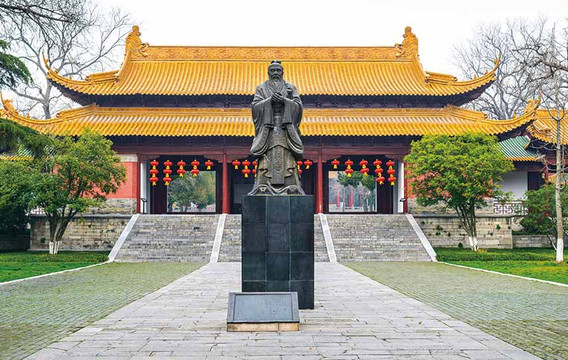
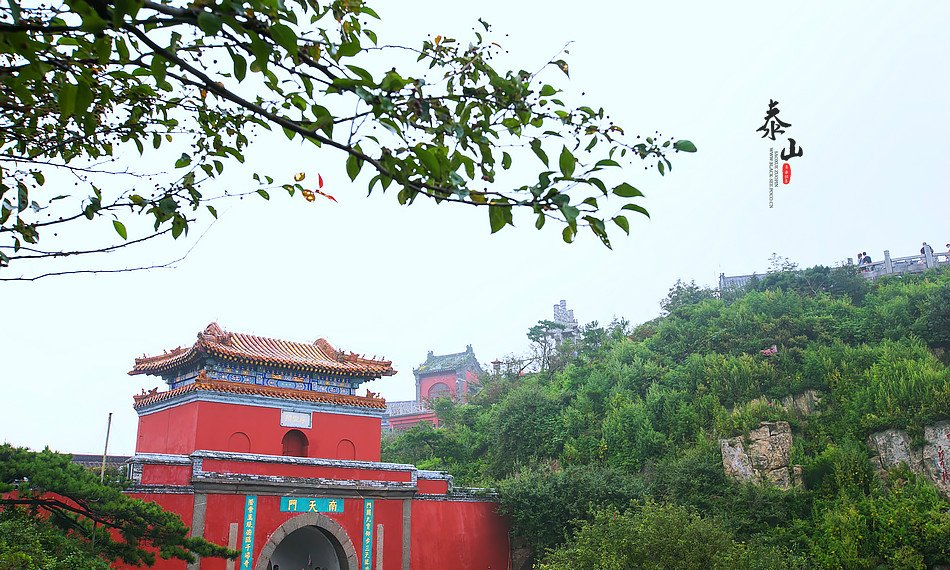

精品路线
- 
济南+淄博+泰山+曲阜三孔4天3晚跟团游
北京出发·高铁往返丨进淄赶烤 纯玩0购/泰安免费升2晚五钻/赠非遗皮影戏 登泰山/探鲁壁/寻家谱 50高餐标品鲁菜/孔府菜 玩4大5A 20人小团 60周岁以下不含门票
详细请点击官网查看 
济南经典3日线路
第一次来济南，你需要一份尽显济南“泉城”特色的贴心攻略。趵突泉、大明湖、芙蓉街……我们竭尽全力带您走近济南的汨汨泉水、感受济南老街巷温柔敦厚的情怀。
详细请点击官网查看- 
泰安欢乐3日线路
假如给我三天假期，登泰山，看日出。清晨的第一缕阳光照进心田，迎着微风，似乎找到了保持微笑的能量。在方特欢乐世界里呐喊尖叫，谁的生活不曾疯狂。来一场彻底的休闲放松之旅吧。
详细请点击官网查看 -
西安+兵马俑+华清宫+大唐不夜城双飞3天2晚跟团游
20人纯玩团『盛世长歌•初游力荐』连宿市区3钻酒店 · 西安24H专车接送站+双景区讲解耳麦 夜游大唐不夜城 首尾两日DIY自由行
详细请点击官网查看 -
2日-北京
北京2日游 途径天安门广场，故宫博物院，国博古代中国展厅
详细请点击官网查看